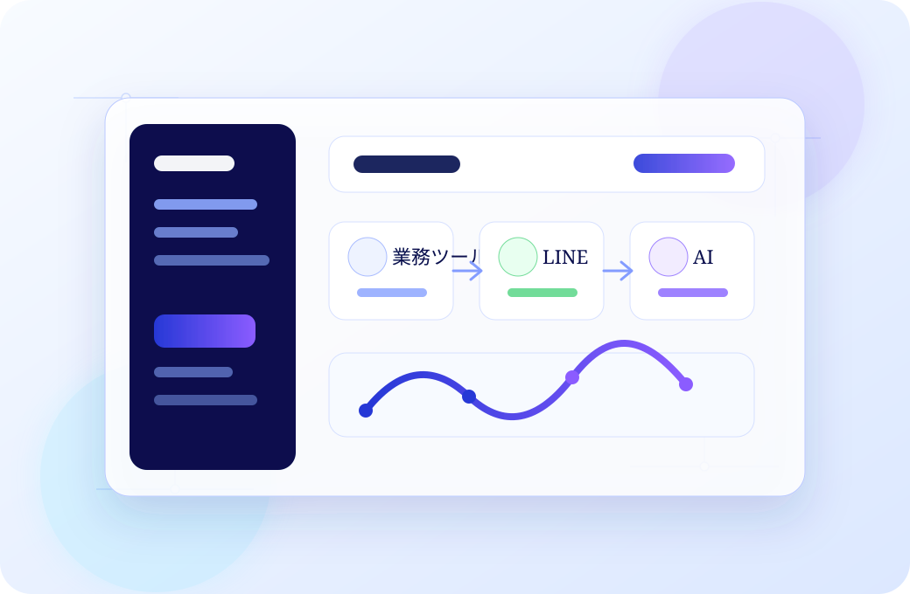

Lark
Lark
情報をつなぎ、チームをもっと強く。
- 予約・顧客情報・施術履歴を一元管理
- スタッフ間の情報共有をリアルタイムに
- タスク・シフト・研修もスムーズに
AI・Lark・公式LINE を連携させ、サロンワークに集中できる仕組みを整えています。

情報をつなぎ、チームをもっと強く。
お客様との信頼関係を、やさしく。
考える時間を創り、クオリティを高める。
LINE から簡単予約
LINE で即時にご案内
Lark で一元管理・共有
返信作成・コンテンツ生成
最適なご提案とフォロー
LINE の自動応答で24時間受付。取りこぼしを防ぎます。
来店前に LINE でお知らせし、キャンセルを抑制します。
一人ひとりに合わせたご提案で、リピートにつなげます。
AI で下書きを効率化し、発信を継続します。
サロンの成長には、仕組み化とテクノロジーの活用が欠かせません。Lucia の取り組みや導入サポートについて、お気軽にご相談ください。